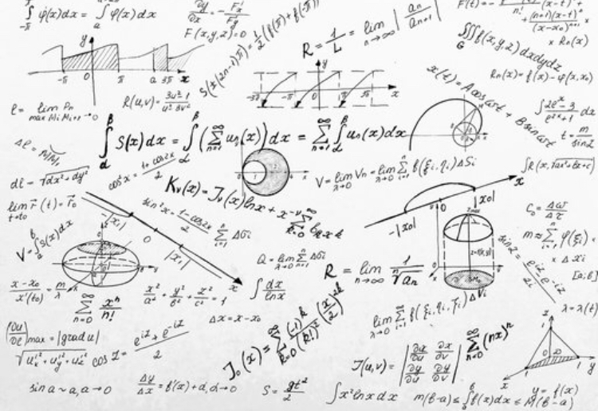

```html
Programmable Project
Welcome to my boards page
1. Design and complete robotic and embedded systems solutions that address real-world situations and challenges.
Artifact 1
This will talk about my first artifact
Link to YouTube video
2. Demonstrate embedded microprocessor system skills such as microcontroller selection, digital logic design, schematic creation, printed
circuit board layout and construction, electromagnetic compatibility design and manufacturing design.
Microprocessor system skills typically involve understanding how a microprocessor (or CPU) functions and interacts with other components in a system. This includes knowledge of digital logic design,
microcontroller selection, schematic creation, printed circuit board layout and construction, and electromagnetic compatibility design.
Link to my GitHub for the code

3. Develop vision and sensing systems for use in robotic applications.
4. Artifact 2
This will talk about my second artifact
Link to YouTube video
5. Demonstrate embedded microprocessor system skills such as microcontroller selection, digital logic design, schematic creation, printed
circuit board layout and construction, electromagnetic compatibility design and manufacturing design.
Link to my GitHub for the code
6. Develop vision and sensing systems for use in robotic applications. Integrate transducers, actuators, feedback and other mechanical systems into robotic platforms.
7. Apply examples of human and autonomous control systems into robotic platforms.
8. Implement artificial intelligence and data systems into robotic platforms.
```